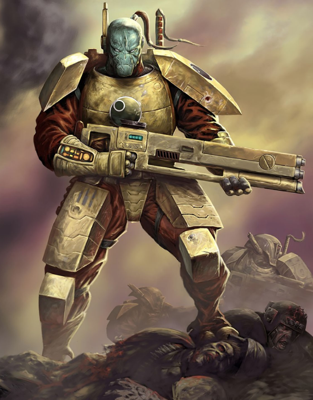

Dossier xenos 901.M41
Les T’au représentent une anomalie dans les archives impériales. Une espèce xenos jeune, technologiquement avancée, organisée, et surtout capable de progresser à une vitesse jugée inquiétante par l’Ordo Xenos.
Leur monde natal, T’au, fut longtemps ignoré. Lorsque les premières observations furent enregistrées, l’espèce était encore fragmentée, divisée en tribus primitives. Rien ne la distinguait d’innombrables civilisations mineures promises à l’extinction ou à l’oubli.

LES PREMIERS ÂGES
Puis survint un changement brutal. Une unification soudaine. Une transition rapide d’un état tribal vers une société structurée, disciplinée, et orientée vers un objectif commun.
Les causes exactes de cette transformation restent floues. Les archives mentionnent l’apparition d’une caste dirigeante, les Éthérés, dont l’influence sur les autres T’au semble dépasser les mécanismes politiques classiques.
Sous leur direction, les conflits internes cessèrent presque entièrement. Les différentes branches de l’espèce furent intégrées dans un système cohérent, chacune assignée à un rôle précis.
Ce qui aurait dû prendre des millénaires s’accomplit en une période anormalement courte. Technologie, organisation, expansion. Tout progressa simultanément.
LA RUPTURE
L’Imperium observa cette évolution avec méfiance, mais sans réaction immédiate. Erreur récurrente.
Les T’au ne cherchèrent pas d’abord la guerre. Ils proposèrent une idéologie. Le Bien Suprême. Une doctrine d’unité, d’ordre et d’expansion, présentée comme bénéfique pour toutes les espèces capables de s’y soumettre.
Ce discours attire. C’est ce qui le rend dangereux. Là où d’autres xenos imposent la domination par la force, les T’au proposent une intégration progressive. Une assimilation douce, suivie d’un contrôle total.
Leur croissance ne repose pas uniquement sur leur propre espèce. Ils recrutent, absorbent, utilisent d’autres formes de vie. Certaines rejoignent volontairement. D’autres n’ont pas réellement le choix.
L’HÉRITAGE ACTUEL
Le plus inquiétant reste leur potentiel. Contrairement aux puissances anciennes, les T’au ne sont pas figés. Ils apprennent. Ils expérimentent. Ils corrigent leurs erreurs.
Leur faible présence dans le Warp les protège partiellement des influences chaotiques, mais les rend également dépendants de technologies alternatives pour naviguer et communiquer. Une faiblesse. Mais aussi une protection.
Il faut comprendre ceci. Les T’au ne sont pas une menace immédiate comparable aux Tyranides ou au Chaos. Ils sont autre chose. Une menace lente, rationnelle, structurée. Une expansion qui ne repose pas sur la destruction, mais sur la conversion.
Fin de l’extrait. Toute interaction avec des représentants T’au doit être surveillée. Leur doctrine d’intégration constitue un risque idéologique majeur.